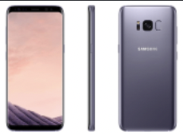

Park Gyeol
/ student
자기소개
취미
활동
SNS
GALAXY S3
GALAXY S4
GALAXY S5
GALAXY S6
GALAXY S7
GALAXY S8
GALAXY S9
GALAXY S10
GALAXY S20
GALAXY S21
GALAXY S8
 지난해의 아픔을 딛고 새해가 밝았습니다.
이번 해의 신기술은 18.5:9 디스플레이가 될 거라는 예상이 많았습니다. 예상대로 18.5:9디스플레이가 탑재된 갤럭시S8 시리즈가 출시됩니다.
사양은 엑시노스 8895, 4GB 램, 1200만 화소 카메라, 3000mAh의 배터리 등등이 있으며 특이점으로는 앞서 말씀드린 18.5:9 QHD+ 디스플레이가 탑재 되었습니다.
특징으로 USB C가 드디어 삼성 휴대폰에 탑재되어 좀 더 빠른 속도로 데이터 전송을 할 수 있게 되었습니다.
전면의 대부분이 화면으로 덮여있었고 당시에 온 스크린 지문인식 기술이 없었기 때문에 지문인식 센서는 카메라 옆으로 이동하고 물리 홈키는 소프트웨어키로 바뀌게 되었습니다.
이로 인해 물리키를 선호하여 LG 폰보다 삼성을 선호하던 사람들의 반발이 생겨났지만
곧 적응하게 되었고 카메라 옆이라 지문인식을 할 때 카메라가 너무 쉽게 더러워진다는 의견 또한 케이스로 해결이 가능해서 빨리 식었던 것 같습니다.
기능으로는 삼성은 원래 S보이스라는 인공지능 비서가 탑재되어 있었는데 그것보다 훨씬 좋은 Bixby가 들어갔습니다.
한계점이 있었지만 S 보이스보다는 훨씬 사용성이 좋은 느낌을 받았었습니다.
또한, 덱스 스테이션을 통해 삼성 덱스를 지원했는데 이 덱스는 급할 때 윈도우 대신해서 사용하기에 나쁘지 않다고 평가가 되었지만 스테이션이 꼭 필요했기 때문에 한계점이 있었습니다.
갤럭시S8을 홍보하려고 한다면 이번년의 특징인 18.5:9디스플레이를 중심으로 홍보하고 빅스비를 사용하는 모습을 실제로 보여주며 홍보하면 좋을 것 같다는 생각을 했습니다.
또한 USB C를 탑재했기 때문에 각광받고 있는 유튜브를 할 경우 빠른 데이터 전송이 가능하다는 점 또한 강조하면 좋을 것 같습니다.